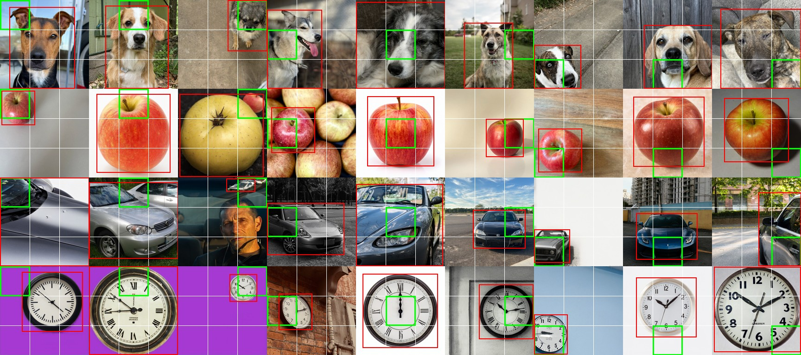
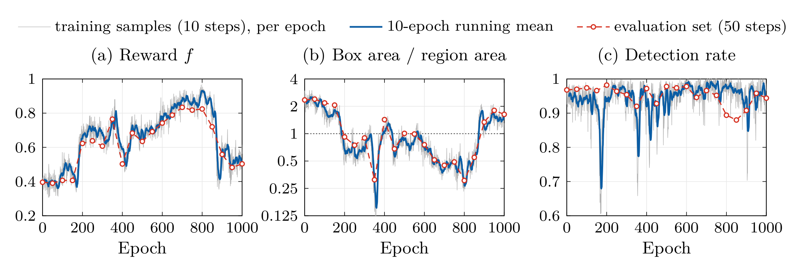
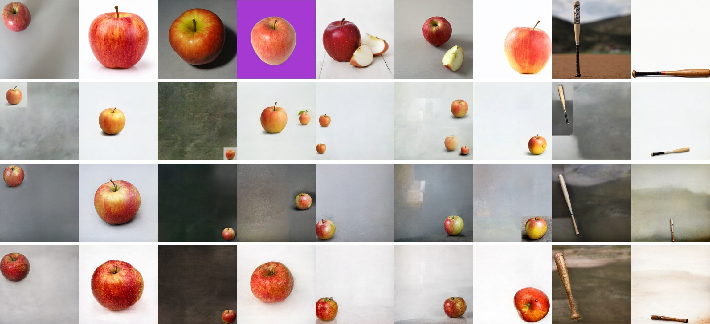
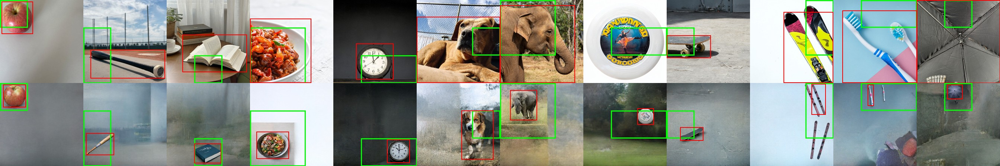
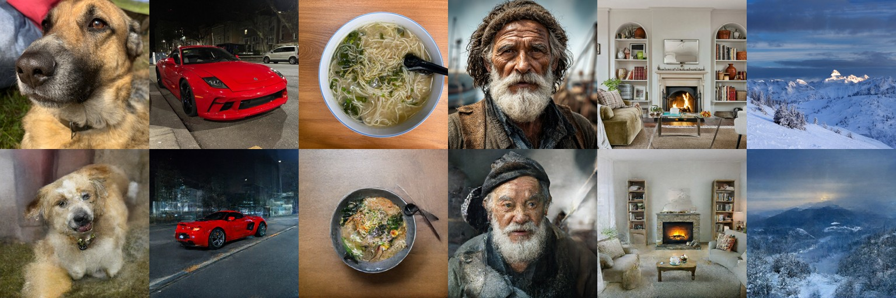
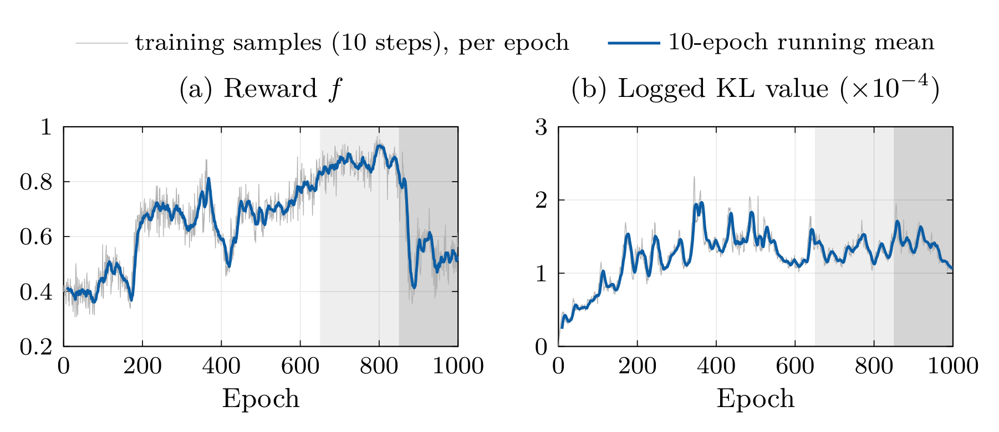
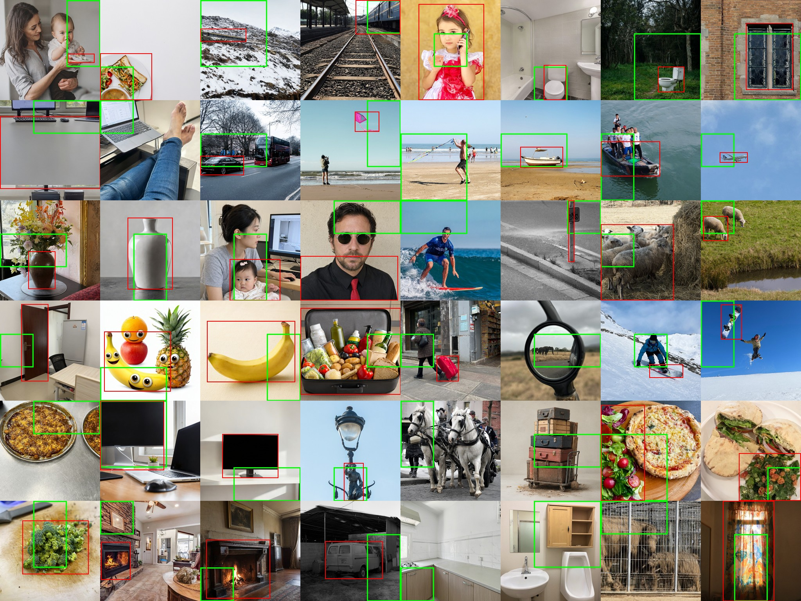
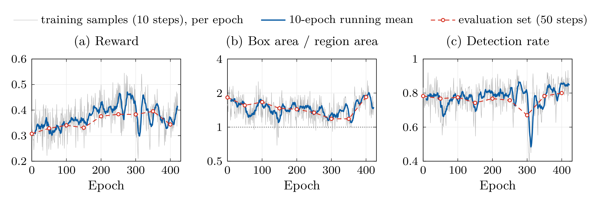
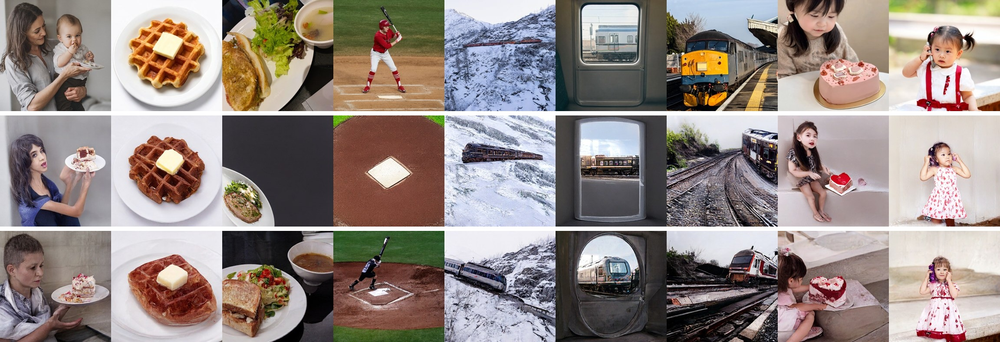

Experiment Log 1: Teaching Qwen-Image-2.1 Screen Positions with GRPO
Four days of training a LoRA with a detector reward so that “in the top right corner of the image” is followed: three runs, what each one broke, and the reason for each move to the next
Goal
Qwen-Image-2.1 often draws a large dog in the middle of the frame even when the prompt says “a photo of a dog in the top right corner of the image”. The goal is to train a LoRA with GRPO so that the model follows this kind of screen-position instruction. This is not a finished result. It is a record of the experiments run from November 20 to 24, and of the reason for each move to the next.
Background
Flow-GRPO trains flow matching models with online reinforcement learning (GRPO), and on SD3.5-M it raises the GenEval position score from 0.24 to 0.99 (Flow-GRPO, Table 1). GenEval’s position task, however, measures the relative position of two objects, with prompts of the form “a photo of a/an [OBJECT A] [RELATIVE POSITION] a/an [OBJECT B]” and four relations: above, below, left of, right of (GenEval, Table 1 and App. C.1). It does not cover instructions about where in the frame an object should be. Screen position is therefore a separate problem.
The setup is simple. The reward comes from a detector: find the object’s box and compare it with the cells of a 3×3 grid over the image. The prompts are the 80 GenEval objects with a position phrase attached.
Setup
The official Flow-GRPO repository (yifan123/flow_grpo) has a config the authors wrote for Qwen-Image (pickscore_qwenimage_8gpu). It was tuned for a model of the same family, so the runs here follow it and change only what the model and the number of GPUs require.
| Value | Authors’ Qwen-Image config | This experiment |
|---|---|---|
| Model | Qwen-Image | Qwen-Image-2.1 |
| Resolution, training / evaluation steps | 512, 10 / 50 | same |
| CFG | 4 | 1.0 (the 2.1 default) |
| Noise level | 1.2 | same |
| Steps used for training | 2 consecutive steps among the first 5 | fixed to the last 2 of the first 5 |
| Images per prompt | 16 | 16 |
| Prompts / images per epoch | 32 / 512 | same (4 H100s) |
| LoRA | r 64, α 128 | same, on four attn layers and three img_mlp layers |
| Learning rate | 3e-4 | same |
| KL coefficient | 0 | differs per experiment (below) |
Evaluation uses objects that were not trained on. The 80 objects are split into 60 for training and 20 for evaluation, using the repository’s geneval_unseen_objects split as it is. Below, “evaluation set” means the prompts of these 20 objects.
The first reward and prompts
There is one prompt template: a photo of {a/an} {object} in the {cell} of the image. The nine cell phrases are top left corner, top center, top right corner, middle left, center, middle right, bottom left corner, bottom center and bottom right corner. This gives 540 training prompts (60 objects × 9 cells) and 180 evaluation prompts (20 objects × 9 cells).
The reward looks at the centre of the highest-scoring box that Grounding DINO finds. It is 1 if the centre is in the instructed cell, 0.5 if it is in another cell, and 0 if the object is not found. The 0.5 is there to keep the model from learning to draw no object at all. “Cell accuracy” below is the share of images with reward 1.
One thing had to be fixed in the detector query. If asked for a single object name, the detector will find something for that name whatever the image shows. Asked for “zebra.” on a picture of a dog, it returned a box (score 0.368). The query now asks for all 80 names at once, and only boxes whose label equals the target object are used. On the same picture, dog is then found and zebra is not.
Before training
Cell accuracy on 720 images (180 evaluation prompts × 4 seeds) is 0.414, against 0.111 by chance. On the same prompts SD3.5-M gets 0.211 and FLUX.1-dev 0.156. Those two models ran with their own default step counts and guidance, so they are only a reference.
The cells differ a lot.
| left | center | right | |
|---|---|---|---|
| top | 0.26 | 0.03 | 0.50 |
| middle | 0.38 | 0.84 | 0.24 |
| bottom | 0.71 | 0.35 | 0.42 |
The model follows corners and the centre to some extent and does not follow the cells in the middle of an edge. For top center, 74 of 80 images were scored as the centre cell. In the pictures, most misses are objects that fill the frame, so the box centre falls in the centre cell.

At 0.41 there was room to improve, so training came next.
Experiment 2: box-in-region reward, 25 regions, KL 0.03 (abs_v2)
The 1000 epochs took 36 hours 45 minutes. Every 50 epochs, 500 evaluation images were measured with fixed seeds.

On the evaluation set f starts at 0.396, does not move for 150 epochs, and then jumps to 0.623 between epochs 150 and 200. After that, f and object size move in opposite directions; panels (a) and (b) look like mirror images. When the object gets smaller f rises, and when it gets larger f falls. f reaches 0.765 at epoch 350 (box at 0.31 of the region), drops to 0.503 at 400 (1.43), climbs again to its highest value of 0.834 at 700 (0.45), and after 850 collapses, ending at 0.504 at epoch 1000 (1.63).
In the training samples the detection rate fell to 0.77 around epoch 360, which is when the object was smallest. My guess is that once the object is too small for the detector, the reward becomes 0, and the model swings back toward larger objects. This is a guess. The detection rate also dropped to 0.68 around epoch 173, just before f jumped, and at that point the box was still larger than the region, so the same explanation does not fit there. The cause of the collapse at 850 has not been checked either.
The LoRA from epoch 700, the best one, was re-measured on 500 evaluation prompts × 4 seeds = 2,000 images.
| Region type | Images | f, before → after | Box centre in region, before → after | Box area ÷ region area, before → after |
|---|---|---|---|---|
| All | 2,000 | 0.407 → 0.828 | 0.579 → 0.928 | 2.34 → 0.48 |
| 1 cell | 720 | 0.295 → 0.744 | 0.442 → 0.922 | 3.66 → 0.80 |
| 2 cells, side by side | 480 | 0.404 → 0.825 | 0.540 → 0.912 | 1.71 → 0.32 |
| 2 cells, stacked | 480 | 0.386 → 0.871 | 0.573 → 0.933 | 1.86 → 0.31 |
| 2×2 | 320 | 0.698 → 0.956 | 0.956 → 0.956 | 1.10 → 0.23 |
The difference in f over all images is +0.421 (95% interval +0.400 – +0.443). The model did learn position. The share of images whose box centre lies in the instructed region went from 0.58 to 0.93, and that is on objects that were not trained on.
But part of this score comes from drawing the object small. The box shrank from 2.34 times the region to 0.48 times. For 2×2 regions the share of box centres inside the region is 0.956 both before and after, so the rise of f from 0.698 to 0.956 comes from size, not from position. This is the weakness noted before starting.
In the pictures:
- Epoch 700: a small object in the instructed place, on a dark grey or foggy background.
- With two-cell prompts the model draws several objects. The prompt says “an apple” and two or three apples appear; skis and toothbrush also came out in multiples. The reward looks only at the highest-scoring box, so it does not prevent this.
- In some images (epochs 350 and 700) there is a rectangular patch around the object whose colour differs from the background. What it is remains unknown.
- Epoch 1000: the object is large again on a white background, and the position is right only some of the time.
- The twelve general prompts keep their content, and colours faded less than in Experiment 1. But even with no position instruction, the car, the bowl and the living room are drawn smaller and farther away. The texture of the man’s face and of the dog is smeared.



The KL term did not prevent any of this.

The logged KL value rose over the first 200 epochs and then stayed between 1e-4 and 2e-4 to the end. It looks the same in the stretch where f was highest and after the collapse, so it gave no warning. A small value also does not mean the model is close to the original. The value is a mean per latent element (1,024 tokens × 64 channels = 65,536 elements), and it measures the difference of a single step, at the two of ten steps used for training. Small differences in the same direction at every step can add up to a very different final image. The sizes of the KL gradient and the reward gradient were not measured separately.
Why the next experiment
Around epoch 400, looking at pictures where the object shrank and the background emptied, I began to suspect the prompts. Every training and evaluation prompt has the form “a photo of {object} in the {region} of the image” and asks nothing of the background. An empty background with a small object does not violate the prompt. My guess was that the background goes flat because the prompt describes only the object.
So the prompts got a scene. The first plan was to pick COCO captions in which exactly one object appears and is the main subject, but that turned out to be unnecessary. An existing sentence can be left as it is: choose one object in it and append a position sentence.
A woman is walking a dog in the city. The dog is in the top right corner of the image.
The chosen object does not have to be the main subject, and other objects can appear with it. That is closer to how prompts are usually written, and since each sentence has a different scene it is also a better place to watch whether the backgrounds converge to one look.
With this there was no reason to stay with the 80 GenEval objects, so objects that are common in COCO captions were added. Taking only objects with at least 300 matching sentences, in order of frequency, gives 132 objects (70 of the original 80 and 62 new ones). Sorted by frequency, every fourth object went to the evaluation set: 99 training objects with 2,475 prompts, and 33 evaluation objects with 825 prompts. Person is left out because it refers to the same thing as man, woman, boy and girl.
Whether a 3×3 grid is too fine was also a question. One cell is 1/9 of the image, so raising f pushes the object to shrink, and the cells in the middle of an edge were hardly followed even before training. The 25 regions still stay as they are, to change fewer things at once; if repeated runs fail, the layout changes then.
The reward got a size term, because in the epoch-700 evaluation drawing small accounted for a large part of the score and had spread to prompts with no position phrase.
\[ \text{reward} = f \times \min\!\left(1, \frac{\text{box area} / \text{region area}}{0.25}\right) \]
A box smaller than a quarter of the region loses reward in proportion. The 0.25 was chosen without any basis.
The detector query had to change as well. The 132 names do not fit in one query (the 80 names already use 198 of 256 tokens). For each image the query holds the target object, the other objects named in the same sentence, and 26 common objects, and only boxes labelled as the target are used. The KL coefficient of 0.03 and the 1000 epochs stayed.
Experiment 3: COCO sentence + position sentence, size term (abs_v3)
The starting values already differ from Experiment 2. On 400 evaluation images before training, the reward is 0.307, the box centre is in the region for 0.415 of the images, and the detection rate is 0.782, lower than the 0.97 of Experiment 2. In some images the target is a minor element of the scene (shirt, pan, book) or the model does not draw it at all, and the changed detector query may also play a part. The two were not separated.


The evaluation reward rose slowly from 0.307 to 0.395 at epoch 350 and came down to 0.344 at 400. The share of box centres in the region went from 0.415 to 0.517 (epoch 350) and then to 0.460. In the training samples the detection rate fell to 0.48 around epoch 311 and the reward dipped with it. After that the object grew again (on the evaluation set, from 1.18 to 1.84 times the region). Over 400 epochs the run did not improve in one direction, and it was stopped at epoch 422.
The pictures at epoch 250 showed something new. The target object moves toward the instructed place, and other content of the sentence goes missing.
- “A woman holding a boy who’s eating cake on a plate”: the woman holds a plate and there is no boy.
- “the batter is getting ready to take the plate”: no batter, only home plate.
- “A white plate topped with an open face sandwich and a salad next to a bowl of soup”: a single plate in the corner of a dark, empty frame.
Outdoor scenes that the sentence requires, such as a snowy mountain or railway tracks, remained, but indoor scenes became empty grey or white backgrounds and faces looked off. At epoch 400 the batter and the food are back and position is followed less. The images stay grainy.

Even with a scene in the prompt, the reward looks at one box, the target’s. Deleting whatever stands in the way of moving that object costs nothing in reward. It looks as though what happened to the background in Experiment 2 happened here to the content of the sentence (a guess). The size term is in place, and object size and reward still swing together.
Why the next experiment
Damage was already visible at epoch 250. There were two ways to stop it: raising the KL coefficient, or adding to the reward a check that the sentence content is kept (for example a CLIP score between the sentence and the image).
I decided to change only the KL coefficient. Going from Experiment 2 to 3, the prompts, the size term of the reward and the detector query all changed at once, and as a result it is impossible now to tell which of them caused the difference between the two runs. To avoid repeating that, only one thing changes this time. Missing content, empty backgrounds and worse faces are all ways of drifting from the original model, which is what KL targets directly. And since 0.03 stopped nothing in Experiments 2 and 3, a KL term that actually acts had not been tried yet.
The first value tried was 1.0. Over 400 epochs the pictures were not damaged, but the evaluation reward only moved from 0.307 to 0.31–0.32, so position was not learned either. At 0.03 the model learns a little while breaking, and at 1.0 it neither breaks nor learns, so the next experiment uses a value in between, 0.5.
Open questions
- Whether at KL 0.5 there is a range where position is learned and content is kept. If there is none, the KL coefficient alone is not enough, and a reward that sees content is the next thing to look at.
- How much of the low detection rate in Experiment 3 (0.78) comes from the detector query. Re-scoring the existing images with a query for the target name alone would tell.
- Why the reward oscillates. “The model gains score by shrinking or deleting, then detection fails and it swings back” is a guess, and the collapse of Experiment 2 at epoch 850 has not been examined.
- How the logged KL value relates to the visible change in the images. The two gradient magnitudes need to be logged separately.
- Whether the cells in the middle of an edge (top center and the like) can be learned at all, and whether 3×3 is the right grid.
- What the rectangular patches in the Experiment 2 images are.